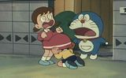
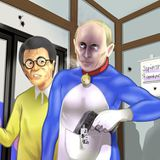
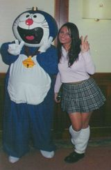
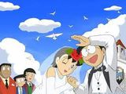
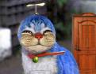
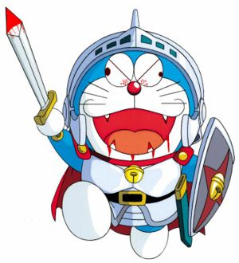
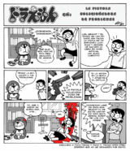
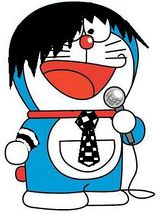
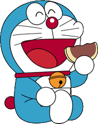
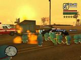

Doraemon
 De: La Frikipedia, la enciclopedia extremadamente seria.
De: La Frikipedia, la enciclopedia extremadamente seria.
| De la serie monstruos mitológicos:
|
| Doraemon
|
|
|
| Nombre Científico
|
Doraemus Terminatorus R2D2
|
| Hábitat
|
La habitacion de Nobita y Futurama
|
| Organización
|
Matrix.
|
| Actividad
|
Joder la existencia
|
| Dieta
|
a base de Dorayaki.
|
| Inteligencia
|
Depende, en el manga su inteligencia es inferior a la de una rata, pero en el anime es equivalente a Bill Gates.
|
| Aparición
|
Mejor no contamos
|
| Número aproximado
|
Buf...
|
| Armadura
|
No tiene, ya que cuando una rata le mordia, se puso a llorar y se le jodio
|
| Ataques
|
Manotazos y patadas
|
| Moral
|
Se cayó
|
| Notas
|
Nunca fue un buen estudiante
|
 Nobita practicando sexo oral
Doraemon acosando sexualmente a Diego el Cigala
 Cuando se decidio usar personas para una serie de accion y drama de doraemon
Según la creencia popular, el gato cósmico viene de un pasado alternativo para ayudar a un tal Nobita, un niño bipolar y con carencias mentales y Sexuales, acosado por sus compañeros gays sadomasoquistas. Su "madre" era un travesti que se drogaba mientras trabajaba. Un día vio a un gato azul que le dio un bebe; con el tiempo se entero de que este era producto de su imaginación y que estaba buscado por unos vagabundos perturbados por secuestro. Al no tener con quien dejarlo no tuvo otra cosa que hacer que operarse y dejar su trabajo para cuidar de un niño al que maltrató y violó por sentirse engañada. Ha este le gusto esto, y con pocos años su "madre" se busco un marido, y empezó a enseñarle el bebé como hacer la profesión, dejando que su padre se la metiera por detrás mientras él estaba disfrazada de mucama.
El nieto de Nobita le envió al futuro para cambiar el pasado futurístico mágico alternativo convirtiendo la trama de la historia en Regreso al Futuro (cosa inexplicable, ya que la gilipollez es hereditaria). Doraemon le ayuda a desintoxicarse de toda la mierda que se había metido, además de hacerle olvidar de todos los putos traumas, aunque aún le quedaron (por eso moleste tanto a sus amigos, a ver si alguna de esas locas lo viola).
El objetivo de Doraemon en la vida de Nobita es conseguir que deje de ser un prostituto idiota. Su método pedagógico es el siguiente: si el niño tiene una dificultad, eliminémosla con un aparato del siglo XIX. Hay quien ve esta metodología como una consecuencia inmediata del capitalismo-consumista. De cualquier manera, Nobita es tan inepto que ni siquiera todos los aparatos del bolsillo de Doraemon consiguen paliar sus cuatro problemas principales: que Gigante no le pegue (aunque no consiguió que le viole), sacar mejores notas, tener cosas más chulas que su amigo rico Suneo y llevarse tan bien con Shizuka para que esta lo vuelva a trasvestir.
Doraemon le da trastos a Nobita para ser mejor persona pero no puede con él, así que le engaña, hace que un negro le de por detrás sin vaselina (cosa que encanta a Nobita, pero que lo acaba matando) y se va a tirarse a Shizuka con su micropene de metal.
Biografía de Doraemon (alias Jurgen)
 Doraemon de cañas con una amiga (y que buena que está la amiga...)
- En el siglo IV nace Doraemon (en realidad es el siglo I pero al pasar al 2.000 tuvieron que cambiar el argumento de la serie). Hay teorías sobre de que nació o si nació o fue creado.. Las 2 versiones más populares son que nació de un huevo de wombat, y que fue creado en una cadena de montaje, se le cayó una tuerca y así pudo no convertirse en un robot monótono.
- Poco después de "nacer" es trasladado a un centro para robots "extraños" donde se le da una formación especial.
- Al finalizar el cursillo es subastado por "internet-tele" a un descendiente de Nobita Nobi que se lo queda por ser el único pujante.
- Hasta el momento Doraemon gozaba de unas orejas y de un color amarillo güevon que cambió por un desgraciado incidente donde perdió las orejas por culpa de dos ratas (de aquí su miedo a las ratas) y su color amarillo que se quedó en azul al oxidarse por haber estado llorando toda la noche. Como se puede ver, por mucho tiempo que pase, el óxido sigue siendo un problema sin solución, más enigmático que la vacuna contra la varicela.
- Con el pasar de los años el puto de Nobita envía a Doraemon a ayudar a este por haber sido su ascensor el único que no hizo nada de provecho.
- formo el Equipo A (comunmente llamado como the doraemons), que fue una copia barata del equipo A original, ya que estaba formado por varios gatos de distintas nacionalidades (uno de ellos, que era rumano estaba en la lista de los mas buscados por robar 5.000 metros de cobre en varias empresas), y lo que hacian era enarbolar sus tarjetas de visita por todo el mundo y detener a gente que segun los gatos era malvada, posteriormente en su ultima mision, rescatar al mago houldini (alias dorapan), doraemon mato a todo el equipo y huyo a la china occidental, actualmente se le busca por homicidio en primer grado.
- Este acaba adoptándolo en su casa pese al micropene de Doraemon.
- Después de todo esto se lo tira.
Morfología de Doraemon
 Habituales sueños de Nobita, mencionados en el opening de la serie.
- Su cabeza pesa el 75% de su peso completo.
- No tiene dedos, pero si un micropene de metal.
- Tiene un bolsillo con un agujero negro, asi le caben hasta las putas dentro.
- Es un robot y, como tal, se estropea, eyacula aceite y caga tuercas.
- Teme a unas mierdas ratitas, las cuales viola por las noches.
- Tiene bigotes y un cascabel. El bigote para que se vea que es un macho, y el cascabel para que vea que es coqueto y algo afeminado.
- Tiene una mierda de cola con una bolita roja al final pero en realidad eso es un cojon.
- Lo caparon tras darse cuenta de que un ser tan mierda no debía seguir extendiendo su semilla.
- Doraemon era un verdulero del campo que cogía patatas todos los días, luego se las metía por el culo y se las vendía a McDonalds.
- Doraemon come pasteles rellenos de "Chocolate" (de dudosa procedencia) que le han provocado una extraña adicción
- Doraemon es un Gato
- Doraemon NO es un wombat
- Doraemon come conchas porque la suya la perdió en una pelea de mapaches cabrones y gays.
 Como sería Doraemon en la vida real...
 Última imagen obtenido del individuo. Se busca vivo o muerto; se recomienda cuidado, ya que es un sujeto peligroso.
Artilugios de Doraemon
- La puerta mágica. Te abre una puerta a un lugar cualquiera sólo con que lo pienses.
- La linterna reductora. Reduce lo que alumbra.
- El para-tiempo. Detiene el tiempo excepto para ti (qué bien me lo pasaría...).
- El casco volador. Una gorra para volar.(también llamado gorro-coptero)
- El proyector mágico. Un proyector que puede proyectar imágenes en una sala para que parezca otra.
- La capa de Superman. Te conviertes en un Superman (en realidad es una mierda, porque lo único que haces es volar hacia donde te obligue la gente a ir para hacer sus trabajos sucios, como limpiar el váter o cavar en la tierra)
- El martillo desatorador. Mazo de madera gigantesco con el que le da a Nobita cuando se pasa de gilipollas (todo el día venga), se supone que mejora la memoria.
- La capa de invisibilidad. Te vuelves invisible. Se la robó a Jarri (le ponen los niños con gafas, sí).
- La capa ninja. Con esta puedes camuflarte en las paredes y también incluye set de herramientas ninja.
- La píldora que te transforma en niño. Los de Shinichi Kudo.
- Los discos de daddy yonki. Consigue que te salga mierda hasta de las orejas.
- El abre-abre armarios. Para salir del armario.
- La puerta de la cocina. Para salir de la cocina.
- El wáter. En el cual Doraemon se pasó tres años de tanto tragar mierda.
- Tarjeta de digievolución. Doraemon digievoluciona en Supermegahiperdoraemonachomon.
- La tarjeta VISA. Para tenerlo todo.
- Otro bolsillo mágico, que si lo sacara, no tendría que soportar a Doraemon nunca más.
- La Gameboy. Para poder jugar a Pokémon en todas partes.
- El cable link. Para poder jugar a la Gameboy con su amigo Travesti.
- El botón de autodestrucción. En caso de emergencia (o de aburrimiento) úsese.
- El despertador (aunque nunca lo admitió, ya que todos piensan a las 6 de la mañana cuando suena, en matar a su creador).
- Muchos más.... Los artilugios e inventos de Doraemon son infinitos...
Se puede destacar el galardonado con el Premio Nobel de la Paz conocido como El ingenioso Corrector ortográfico (Bacterio Corp.). Doraemon murió antes de lanzar al mercado tal prodigio. Por eso es que el cateto que describió los anteriores inventos haga que me sangren los ojos.
Cabe destacar que Nobita le agradece con favores sexuales los inventos que Doraemon le da y también le chantajea con contarle a "mamá" que Doraemon rompió un plato.
Final del anime
 Uno de los bocetos del final de la serie
 Otras teórias afirman que DoraEMOn se volvio
emo y se suicidó
El final del anime ha sido motivo de controversia desde que empezaron a sacar Ovas a tuti-plen y muchos usuario preconizan que las serie sólo puede tener uno de estos finales lógicos:
- En el último capitulo, en el último, en el más último de los últimos se muestra que, en realidad, Nobita es un niña en estado vegetativo y que toda la serie de Doraemon es sólo un el otro barrio. Hay quien argumenta que el creador de la serie se vio obligado a emitir este capítulo porque habían habido demasiados incidentes de gilicóptero se habían tirado desde lo alto de su casa.
- Otras teorías absurdas demuestran que esta otra es verdad pero dicen que a Nobita le cae un meteorito mientras intenta suicidarse con el tubo de plástico del gotero a la vez que se mete una inyección de aire directamente en el corazón y se tira por la ventana del hospital.
- Otra teoria, aun mas absurda es que Doraemon fue un super saiyayin que vino del planeta vegeta, seguramente que como esclavo sexual de freezer (le estaba comiendo la polla cada rato), entonces freezer programo a doraemon para que violara a nobita y acabara con todo el japon el 17 de febrero del 2035, y posteriormente cuando se cumplio esa fecha, doraemon le metio un bate de 15 milimetros cuadrados de grosor a nobita por el culo que luego despues de dolerle el culo, le causo una muerte instantanea, luego despues doraemon destruyo el japon y 3 estados mas con un kame-hame-ha solar y posteriormente con el resplandor final (ataques aprendidos de dos inventos de doraemon [que fueron la cola de vegeta y la ropa de goku]) y destruyo la tierra, y doraemon fue feliz y volvio al planeta vegeta euforico.
- Otra teoria, aun mas superabsurda es que Doraemon fue un androide absorbedor de energia creado por el doctor makigero, y posteriormente contratado por el ejercito del lazo rojo, fue programado no solo para matar a Goku si no tambien para violar a nobita, meterle un palo de 25 cm por el culo hasta provocarle la muerte instantanea, ademas de quedarle el culo mas dolorido que un pimiento morron, el resto les absorbera toda su energia vital, excepto a shizuka que primero la violara y luego le absorbera la energia y ya con eso provocaria la mega-destruccion total de la tierra, de todo el anime con solo un kaioken, un kame-hame-ha solar y ya para rematar, un ki-ko-ku, el resto seria historia y a partir de ahi finalizaria la serie.
- En el final de la serie Doraemon un poco hasta los cojones de Nobita. Le da un instrumento para solucionar ciertos problemas. El resto es historia.
- Doraemon se estropea y se va al futuro a arreglarse, pero no vuelve más. Nobita no puede más, y se suicida aguantando la respiración, pero como se desmaya antes, no puede.
- Doraemon se da cuenta que hace años que no ve a su familia y le dice a Nobita que ya no puede hacer nada más por él (excusa barata) y se pira pa' su kelly. Nobita pilla un trauma, y más cuando Zuneoo se disfraza de Doraemon y se ríe de él. Se folla a Gigante pierde y Doraemon vuelve. FIN.
- Otra teoría (la menos disparatada) es que la mafia Japonesa (Yakuza) un shuriken a la velocidad de la luz gracias a un invento de doraemon, lo que provoca una franja en el espacio tiempo que hace que se trague toda esa M***** de serie y se restablece la paz en el universo no existente, esto provoca que toda la dirección de este manga se suicide por la comedura de sesos que han tenido pensando en esta teoría.
- Doraemon es en realidad un robot asesino del espacio (de hay que sea el gato cosmico) que viene a dominar el mundo junto con Darth Vader. En el ultimo capitulo, Nobita desvela que es un gay travesti y folla a Doraemon.
- Otra teoría, es que Nobita le cuenta a Doraemon lo que le pasó. Que gigante y Suneo le trolearon porque Nobita, no se las arregla. Doraemon, un poco hasta los putos y duros cojones, le saca un aparato llamado "Venganzaneitor", que sirve para vengarse de las personas que te han hecho sufrir tanto. Doraemon apunta a Nobita, le dijo que era para probarlo (excusa). Le dispara, lo mató, luego mató a su madre y a su padre, violó a Shisuka, viajó en el tiempo contrato a 19 matones, y mataron a toda la población. 4 meses Doraemon murió de SIDA.
- Otra historieta similar: Cuándo Nobita estaba cagando en el baño,vió a Doraemon,y antes de empezar a gritar le dió un disparo en la siém,le arranco las tripas lo ahorcó con ellas y violo el cadáver de Nobita luego contrato a 4 hombres empapados de Crack y exterminó a todos,luego el siguió violando todos los cadáveres,luego de todo eso se masturbó durante 112 años y murió
FIN
Conclusiones lógicas de la serie
 Doraemon siempre sufrió una terrible adicción a los dorayakis, ahora está en una clínica de desintoxicación. Se ha descubierto que los dorayakis llevan un derivado de coca y de mierda de rata.
Despues de ver todos los putos capitulos de la puta serie hentai, he llegado a algunas conclusiones lógicas que todos saben, pero que hay que ponerlas por si hay alguien tan gilipollas como nobilita que no lo entendió.
 Doraemon liandola en GTA.
- Nobita la tiene corta
- La serie siempre es igual...
- Nobita es gilipollas.
- Su padre también.
- La madre todavía más.
- De Dekigusu ni hablemos.
- Todos le tienen miedo a Gigante, cosa que nadie comprende (¿será porque tiene el poder de que con su voz se carga los cristales y hace caer pájaros como de una tómbola?).
- Gigante nunca destacaria en Operación Triunfo, cuando fue, su grito fue atronador que destruyo el lugar donde se hicieron los castings y 100 casas mas, y claro, luego despues gigante salio por piernas y no se le volvio a ver el pelo, todavía se le esta buscando para que pague los desperfectos
- Shizuka tiene tendencia masoquista.
- Shizuka es una puta guarra.
- Shizuka acaba casándose con Nobita porque este la tiene bien grande y sabe como manejarla bien, es la única explicación, porque por inteligente o atlético no creo.
- Los personajes, por muchos muchos muchos capítulos que pasen nunca crecerán, a no ser que vayan al futuro; en el último puñetero capítulo Nobita sigue teniendo la misma cara de matao que en el primero.
- Doraemon es el típico machaca de la serie.
- Nobita, también.
- En casi todos los puñeteros capítulos, siempre sucede la misma rutina:
-Nobita saca un 0.
-Nobita recibe una buena paliza.
-Nobita es mordido por un perro.
-Nobita llega llorando y le pide algo a Doraemon.
-Éste le dice que no, y luego va y se lo da.
-Nobita la caga con ese aparato, y Doraemon le ayuda.
-Al final del capítulo, o Nobita llora, o es perseguido, o le pegan,( o le violan ),o las tres cosas.
- Nobita es un cagao que no sabe cuando son 2+2.
- Solo en en 2 de cada 10 capítulos no sucede esta rutina.
- Nunca llegaré a entender como Nobita le deja el cacharro que le ha dado Doraemon a Gigante y Sueno cuando éstos antes le han insultado, pegado, etc, etc.
- Se rumorea y está comprobado, que esta serie sólo pretende:
-Legalizar la maría y las drogas farmacéuticas (por el ending).
-Formar un ejército de niños subnormales, salidos y drogatas.
-Convertir a todo los niños en travestis para que el creador de la puta serie se los puede follar (sí, le gustan los de eso tipo)
-Crear una paranoia irreversible en las delicadas mentes de aquellos niños o tíos (o niñas o tías) que vean la serie.
- la madre de gigante es en realidad Carmen De Mairena en version animada.
- Doraemon se robaba los objetos que tenia por la noche
- Por mucho que peguen a sus hijos no los demandan por abuso.
- Doraemon está mal hecho ya que sus inventos nunca funcionan.
- Nobita saca un -23.
- Nobita usa la red tor
- Los japoneses crearon esta serie porque en Japón no sabian lo que era suspender.
50 sombras de Doraemon
Doreamon otaku vestido de Zelda link
Después de unirse al imperio
Al aprender artes marciales
Doraemon al querer conquistar el mundo
Queriendo rescatar princesas y pisar setas venenosas
¿Es un pájaro?¿Un avión? ¡Es Doraeman!
Cada vez que le vienen ataques de esquizofrenia
Doraemon en el tur de francia
Cada vez que se le va la pinza
En una convención de Otakus
Estudiando para ser del Ouendan!.
Actuando para una peli violenta
Al gastarse 10.000$ para una fiesta
Doraemon siempre ha sido un rebelde
Véase también
¿Que aparato del bolsillo de Doraemon prefieres?
El Gorrocóptero (10.222588623248%)
 124 votos
124 votos
La Capa de Invicibilidad. (5.9356966199505%)
 72 votos
72 votos
La Máquina del Tiempo. (5.8532563891179%)
 71 votos
71 votos
El Pañuelo del Tiempo. (1.8961253091509%)
 23 votos
23 votos
Reloj Para-Tiempo. (6.760098928277%)
 82 votos
82 votos
Que pregunta más so-mierda, yo me quedo con el bolsillo. (69.332234130256%)
 841 votos
841 votos (basado en 1213 votos)
Creada hace 888 días
Autor(es):
- Krusher
- Nexo
- Fordus
- N3ptun3r
- Doctor grijander
- Max Slug
- Pitergrifo
- Zacarias blanco
- Frikiman
- Aque
Frikipedia 2005-2016, Licencia
GFDL 1.2 - Extraído por FrikiLeaks